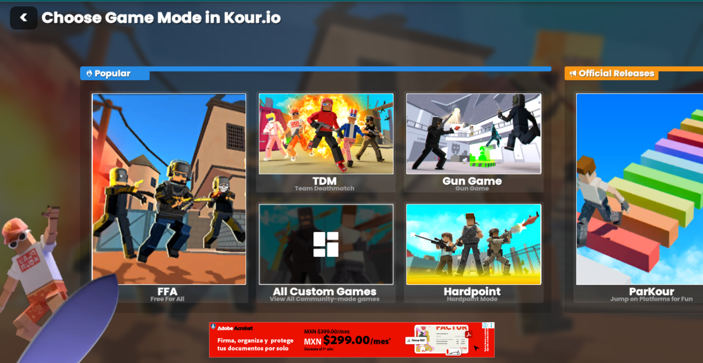

Kour.io ofrece diferentes modos para todos los gustos. Cada uno tiene su propio ritmo y estrategia, así que vale la pena probarlos todos para encontrar tu estilo.
- Free for All: Todos contra todos, gana el que consiga más eliminaciones.
- Team Deathmatch: Dos equipos se enfrentan por llegar primero al puntaje objetivo.
- Capture Point: Captura y defiende zonas del mapa junto a tu equipo.
Practicar el movimiento es clave. Los jugadores más rápidos suelen dominar el mapa.